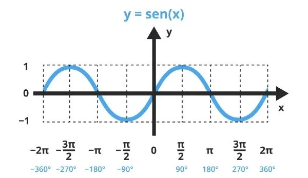
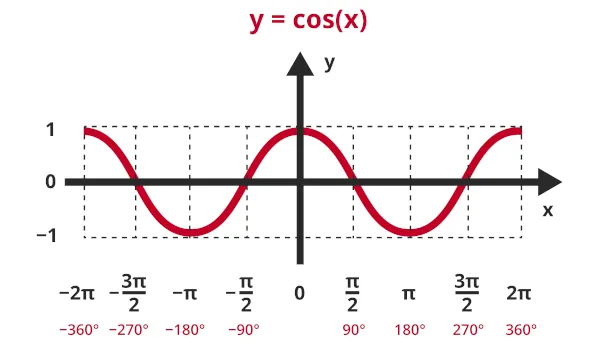
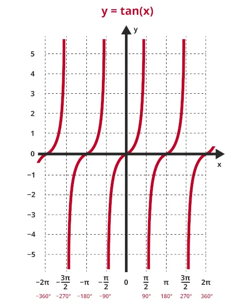

Funções Trigonométricas
Neste conteúdo foi estudado as funções seno, cosseno e tangente como funções reais. Observamos seus gráficos, domínios, imagens, períodos e propriedades.
Função Seno
A função seno associa a cada número real x o valor sen(x). Seu gráfico é uma curva ondulatória que se repete a cada 2π. A imagem da função é sempre o intervalo [-1, 1].
 Fonte: Brasil Escola- Período: 2π
- Domínio: todos os reais
- Imagem: [-1, 1]
- Cruzamentos com o eixo x: múltiplos de π
Função Cosseno
A função cosseno possui as mesmas características gerais da função seno, porém inicia no valor máximo (1). Seu período também é 2π e a imagem é [-1, 1].
 Fonte: Brasil Escola- Período: 2π
- Domínio: todos os reais
- Imagem: [-1, 1]
Função Tangente
A tangente é definida como sen(x)/cos(x). Por isso, não existe quando cos(x) = 0. Seu gráfico cresce sem limites e tem linhas verticais chamadas assíntotas. O período é π.
 Fonte: Brasil Escola- Período: π
- Domínio: ℝ menos onde cos(x)=0
- Imagem: todos os reais
Transformações nas Funções
Há também alterações nos coeficientes que modificam o gráfico das funções trigonométricas:
f(x) = A + B · sen(Cx + D)
- A: desloca o gráfico verticalmente
- B: altera a amplitude
- C: altera o período
- D: deslocamento horizontal